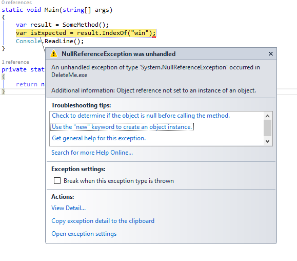
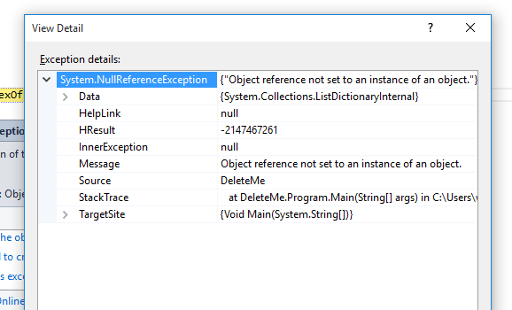
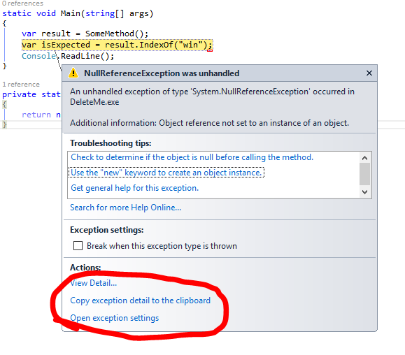

you pasted a picture of your exception into your question
In your question, you indicated that there was an exception thrown when your code executes. That's good information that we need to help you find a solution. However, in order to find that solution, we need to know the details that can be found within the exception. If your question lacks this detailed exception information, it becomes harder for us to help you.
Pasting a picture of your exception is not helpful. You do not have to prove your code threw an Exception with a picture of it--we trusted you when you stated this fact within your question.

Pictures of Exceptions that shows some of the detail contained within the exception are also not helpful.

One of the first things people do when trying to help someone with an exception is they copy text from the exception and paste it into their favorite search engine. When you put an image of the exception into your question, you force people who are trying to help you--for free--to transcribe the exception from your image. Not only is this an annoying waste of time, but also it can result in transcription errors and reduce the chance that the search is successful.
No image can contain all of the details from your exception. Exceptions contain stack traces which are often very long and won't fit in an image. Exceptions also can contain inner exceptions which have stack traces of their own, and they can have inner exceptions as well. We need all that information to answer your question. Your image isn't giving us this necessary information!
In addition, text in images isn't indexed. This makes it very hard, if not impossible, to find your question via search engines. It reduces the visibility of your question and prevents future readers from finding it. It also prevents people who use screen readers from being able to answer your question.
Instead of taking a picture of the exception, get a text report of all of the contents within it. This can usually be accomplished very easy, depending on what language and tools you are using. Here are some examples of capturing these details.
If you are debugging in Visual Studio, the Exception Helper Dialog contains a link that will copy all exception details to the clipboard

If you are experiencing the Exception at runtime, you can catch the exception and call ToString() on it. Log the result, using whatever method is most convenient for you.
Once you have gathered all the details from the exception, you can paste it into your question in an edit. This is important--do not try to paste the exception details into a comment, as there is not enough room for all the of details. There is an "edit" link at the bottom of your question, click it and paste the details into your question. And don't forget to format it!
Once you have done this, leave a comment to the person who sent you this link. They will be happy to retract their downvote.
If not, or if you would like to leave feedback, please create an Issue regarding this page on GitHub. Thank you for helping us improve the way we help you!